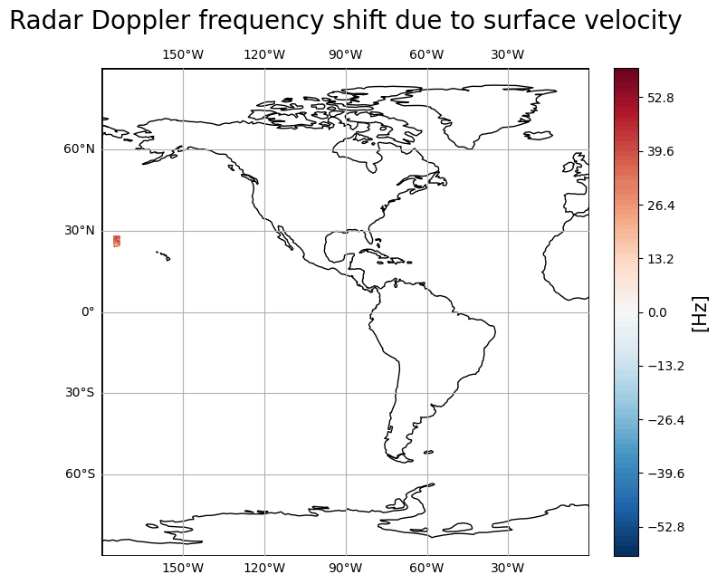

Plot Data on a Map#
Work in progress notebook#
import xarray as xr
ds = xr.open_dataset('https://thredds.met.no/thredds/dodsC/remotesensingenvisat/asar-doppler/2012/01/27/ASA_WSDV2PRNMI20120127_215005_000612433111_00101_51839_0000.nc')
ds
<xarray.Dataset> Size: 39MB
Dimensions: (y: 602, x: 851)
Dimensions without coordinates: y, x
Data variables: (12/19)
sensor_view_angle (y, x) float32 2MB ...
incidence_angle (y, x) float32 2MB ...
sensor_azimuth (y, x) float32 2MB ...
sigma0_VV (y, x) float32 2MB ...
topographic_height (y, x) float32 2MB ...
valid_land_doppler (y, x) float32 2MB ...
... ...
u_range (y, x) float32 2MB ...
std_u_range (y, x) float32 2MB ...
wind_direction (y, x) float32 2MB ...
wind_speed (y, x) float32 2MB ...
longitude (y, x) float32 2MB ...
latitude (y, x) float32 2MB ...
Attributes: (12/75)
GDAL: GDAL 3.2.1, released 2020/12/29
acknowledgement: GSAR IDL pre-processing software was develope...
azimuth_start_time: 2012-01-27T21:50:05.173597
contributor_email: jeong-won.park@kopri.re.kr, hjoh@norceresearc...
contributor_institution: Korea Polar Research Institute (KOPRI), NORCE...
contributor_name: Jeong-Won Park, Harald Johnsen, Geir Engen
... ...
ysamplefreq_slc: 1711.9144385026736
ysize: 629
ytime: 2012-01-27T21:50:05.173597Z
ytime_slc: 2012-01-27T21:50:04.077748
summary_no: Kalibrert geofysisk Dopplerskift fra ENVISAT ...
title_no: Kalibrert geofysisk ENVISAT ASAR Dopplerskift...ds.sigma0_VV.plot()
<matplotlib.collections.QuadMesh at 0x7da76f998f70>

Below is a code snippet which easily extracts the wanted files from “Downloads” (given a recognicable part of their filenames) meant for extracting files which have been downloaded.#
# how to open data when downloaded from the staging page: https://data-staging.met.no/metsis/elements/no-met-staging-e19b9c36-a9dc-4e13-8827-c998b9045b54/search
import os
import glob
import xarray as xr
import pandas as pd
import matplotlib.pyplot as plt
import numpy as np
import cartopy.crs as ccrs
from cartopy.mpl.gridliner import LONGITUDE_FORMATTER, LATITUDE_FORMATTER
from matplotlib.colors import TwoSlopeNorm
import matplotlib as mpl
from mpl_toolkits.axes_grid1.inset_locator import inset_axes
# Get the path of the home directory
home_dir = os.path.expanduser("~")
# Use os.path.join to combine paths
path2files = os.path.join(home_dir, "Downloads") # "Dowloads" --> path to files
# Specify something to recognice the desired nc-files, extract them and put them in a list
desired_files_paths = glob.glob(os.path.join(path2files, "ASA_*.nc"))
# print(desired_files_paths)
'''
# Create a list of desired files
files2open = []
for i in range(len(desired_files_paths)):
ith_file = desired_files_paths[i].replace(path2files+'/', '')
print(ith_file)
files2open.append(ith_file)
print(files2open)
#'''
# Open the first dataset
ds = xr.open_dataset(desired_files_paths[0])
# print(desired_files_paths[0])
# Interactive overview of the dataset
ds
<xarray.Dataset> Size: 39MB
Dimensions: (y: 602, x: 851)
Dimensions without coordinates: y, x
Data variables: (12/19)
sensor_view_angle (y, x) float32 2MB ...
incidence_angle (y, x) float32 2MB ...
sensor_azimuth (y, x) float32 2MB ...
sigma0_VV (y, x) float32 2MB ...
topographic_height (y, x) float32 2MB ...
valid_land_doppler (y, x) float32 2MB ...
... ...
u_range (y, x) float32 2MB ...
std_u_range (y, x) float32 2MB ...
wind_direction (y, x) float32 2MB ...
wind_speed (y, x) float32 2MB ...
longitude (y, x) float32 2MB ...
latitude (y, x) float32 2MB ...
Attributes: (12/75)
GDAL: GDAL 3.2.1, released 2020/12/29
acknowledgement: GSAR IDL pre-processing software was develope...
azimuth_start_time: 2012-01-27T21:50:05.173597
contributor_email: jeong-won.park@kopri.re.kr, hjoh@norceresearc...
contributor_institution: Korea Polar Research Institute (KOPRI), NORCE...
contributor_name: Jeong-Won Park, Harald Johnsen, Geir Engen
... ...
ysamplefreq_slc: 1711.9144385026736
ysize: 629
ytime: 2012-01-27T21:50:05.173597Z
ytime_slc: 2012-01-27T21:50:04.077748
summary_no: Kalibrert geofysisk Dopplerskift fra ENVISAT ...
title_no: Kalibrert geofysisk ENVISAT ASAR Dopplerskift...# Same file that is inspected above
ds = xr.open_dataset('ASA_WSDV2PRNMI20120127_215005_000612433111_00101_51839_0000.nc')
ds
<xarray.Dataset> Size: 39MB
Dimensions: (y: 602, x: 851)
Dimensions without coordinates: y, x
Data variables: (12/19)
sensor_view_angle (y, x) float32 2MB ...
incidence_angle (y, x) float32 2MB ...
sensor_azimuth (y, x) float32 2MB ...
sigma0_VV (y, x) float32 2MB ...
topographic_height (y, x) float32 2MB ...
valid_land_doppler (y, x) float32 2MB ...
... ...
u_range (y, x) float32 2MB ...
std_u_range (y, x) float32 2MB ...
wind_direction (y, x) float32 2MB ...
wind_speed (y, x) float32 2MB ...
longitude (y, x) float32 2MB ...
latitude (y, x) float32 2MB ...
Attributes: (12/75)
GDAL: GDAL 3.2.1, released 2020/12/29
acknowledgement: GSAR IDL pre-processing software was develope...
azimuth_start_time: 2012-01-27T21:50:05.173597
contributor_email: jeong-won.park@kopri.re.kr, hjoh@norceresearc...
contributor_institution: Korea Polar Research Institute (KOPRI), NORCE...
contributor_name: Jeong-Won Park, Harald Johnsen, Geir Engen
... ...
ysamplefreq_slc: 1711.9144385026736
ysize: 629
ytime: 2012-01-27T21:50:05.173597Z
ytime_slc: 2012-01-27T21:50:04.077748
summary_no: Kalibrert geofysisk Dopplerskift fra ENVISAT ...
title_no: Kalibrert geofysisk ENVISAT ASAR Dopplerskift...Plotting Function#
Below is an easy to use plotting function which visualize your desired data variable on a map. There is also possible to set the spatial extent of the plot yourself - default is just plotting the spatial extent of the variable itself as defined in the metadata.
# Original plotting function
'''
def plotting_variables_on_a_map(variable, number_of_colorbar_intervals, lat_min = ds.geospatial_lat_min, lat_max = ds.geospatial_lat_max, lon_min = ds.geospatial_lon_min, lon_max = ds.geospatial_lon_max): # var_min, var_max, var_step
# Create a linear space for latitude and longitude
lat = np.linspace(ds.geospatial_lat_min, ds.geospatial_lat_max, ds.sizes['y'])
lon = np.linspace(ds.geospatial_lon_min, ds.geospatial_lon_max, ds.sizes['x'])
# Create a new xarray DataArray with latitude and longitude as coordinates
variable_with_coords = xr.DataArray(variable.values, coords=[('lat', lat), ('lon', lon)], dims=['y', 'x'])
# Assign variable attributes from the original variable DataArray
variable_with_coords.attrs = variable.attrs
# Now select your slice - defined by the latitudinal and longitudinal extent of the data
plotable_variable = variable_with_coords.sel(x=slice(ds.geospatial_lon_min, ds.geospatial_lon_max), y=slice(ds.geospatial_lat_min, ds.geospatial_lat_max))
# Ready to plot the variable on a map using subplot package of matplotlib.pyplot
fig, ax = plt.subplots(1, figsize=(7, 7))
fig.suptitle(f'{plotable_variable.long_name}', fontsize = 15)
ax.axis('off') # Turn off axes
# Set the projection
ax = plt.axes(projection=ccrs.PlateCarree())
ax.coastlines() # Add coastlines
# Create the gridlines and configure the labels
gl = ax.gridlines(draw_labels=True)
gl.bottom_labels = True # Default
gl.left_labels = True # Default
gl.top_labels = False # Not default
gl.right_labels = False # Not default
# Defining var_min, var_max and var_step --- using the variable attribute minmax to extract var_min and var_max
var_min = int(plotable_variable.minmax.split(' ')[0])
var_max = int(plotable_variable.minmax.split(' ')[1])
var_step = ((var_max - var_min) / number_of_colorbar_intervals)
var_max = int(plotable_variable.minmax.split(' ')[1]) + var_step # redefining the max val to improve visuals of colorbar around center
# Plot the data
plotable_variable.plot.contourf(ax=ax, x='x', y='y',
extend='neither',
norm=TwoSlopeNorm(vmin=var_min, vcenter=0, vmax=var_max),
levels=np.arange(var_min, var_max, var_step),
cbar_kwargs = {'label': f'[{plotable_variable.units}]'}
)
# Setting the extent on the map that is plotted
ax.set_ylim(lat_min, lat_max)
ax.set_xlim(lon_min, lon_max)
plt.tight_layout()
plt.show()
#'''
print('More primitive version of the plotting_variables_on_a_map function. Visuals are not necessarily always optimal.')
More primitive version of the plotting_variables_on_a_map function. Visuals are not necessarily always optimal.
def plotting_variables_on_a_map(variable, number_of_colorbar_intervals = 100,
lat_min = ds.geospatial_lat_min, lat_max = ds.geospatial_lat_max,
lon_min = ds.geospatial_lon_min, lon_max = ds.geospatial_lon_max,
fractional_title_spacing = 0.05,
title_fontsize = 15,
cbar_label_fontsize = 12):
# Create a linear space for latitude and longitude
lat = np.linspace(ds.geospatial_lat_min, ds.geospatial_lat_max, ds.sizes['y'])
lon = np.linspace(ds.geospatial_lon_min, ds.geospatial_lon_max, ds.sizes['x'])
# Create a new xarray DataArray with latitude and longitude as coordinates
variable_with_coords = xr.DataArray(variable.values, coords=[('lat', lat), ('lon', lon)], dims=['y', 'x'])
# Assign variable attributes from the original variable DataArray
variable_with_coords.attrs = variable.attrs
# Now select your slice - defined by the latitudinal and longitudinal extent of the data
plotable_variable = variable_with_coords.sel(x=slice(ds.geospatial_lon_min, ds.geospatial_lon_max), y=slice(ds.geospatial_lat_min, ds.geospatial_lat_max))
# Ready to plot the variable on a map using subplot package of matplotlib.pyplot
# Create the main plot and set the projection
fig, ax = plt.subplots(1, figsize=(7, 7), subplot_kw={'projection': ccrs.PlateCarree()})
ax.axis('off') # Turn off axes
ax.coastlines() # Add coastlines
# Add a black rectangle around the map
rectangle = plt.Rectangle((lon_min, lat_min), lon_max-lon_min, lat_max-lat_min,
fill=None, edgecolor='black', linewidth=2)
ax.add_patch(rectangle)
# Create the gridlines and configure the labels
gl = ax.gridlines(draw_labels=True)
gl.bottom_labels = True # Default
gl.left_labels = True # Default
gl.top_labels = True # Default
gl.right_labels = False # Not default
# Defining var_min, var_max and var_step --- using the variable attribute minmax to extract var_min and var_max
var_min = int(plotable_variable.minmax.split(' ')[0])
var_max = int(plotable_variable.minmax.split(' ')[1])
var_step = ((var_max - var_min) / number_of_colorbar_intervals)
var_max = int(plotable_variable.minmax.split(' ')[1]) + var_step # redefining the max val to improve visuals of colorbar around center
# Plot the data
cax = plotable_variable.plot.contourf(ax=ax, x='x', y='y',
extend='neither',
norm=TwoSlopeNorm(vmin=var_min, vcenter=0, vmax=var_max),
levels=np.arange(var_min, var_max, var_step),
add_colorbar=False # Do not automatically add colorbar
)
# Create an inset axes for the colorbar
cbar_ax = inset_axes(ax,
width="5%", # width = 5% of parent_bbox width
height="100%", # height : 100% of parent_bbox height
loc='lower left',
bbox_to_anchor=(1.05, 0., 1, 1),
bbox_transform=ax.transAxes,
borderpad=0,
)
# Create colorbar
cbar = fig.colorbar(cax, cax=cbar_ax, orientation='vertical')
cbar.set_label(f'[{plotable_variable.units}]', fontsize = cbar_label_fontsize) # Extract units from the plotted variable and use as label for colorbar
# Set and adjust title
mid_lat = (lat_min + lat_max) / 2
mid_lon = (lon_min + lon_max) / 2
ax.text(mid_lon, lat_max + ((lat_max - lat_min) * fractional_title_spacing), f'{plotable_variable.long_name}',
fontsize=title_fontsize, ha='center')
# Setting the extent on the map that is plotted
ax.set_ylim(lat_min, lat_max)
ax.set_xlim(lon_min, lon_max)
plt.show()
Plotting Examples#
# Plotting the desired variable within its geographical extent - By default using the metadata for the geographical extent as lat/lon min/max values.
# Plotting fdg
plotting_variables_on_a_map(variable = ds.fdg,
number_of_colorbar_intervals = 100, # Default value
title_fontsize = 15, # Default value
cbar_label_fontsize = 12 # Default value
)

# Determine the spatial extent for yourself:
# Plotting fdg
plotting_variables_on_a_map(variable = ds.fdg,
lat_min = 15, lat_max = 30,
lon_min = -200, lon_max = -150,
number_of_colorbar_intervals = 100, # Default value
fractional_title_spacing = 0.20, # Default 0.05
title_fontsize = 15, # Default value
cbar_label_fontsize = 10 # Default 12
)

# Plotting fgeo
plotting_variables_on_a_map(variable = ds.fgeo,
# lat_min = 20, lat_max = 50,
# lon_min = -85, lon_max = -65
lat_min = 15, lat_max = 30,
lon_min = -200, lon_max = -150,
number_of_colorbar_intervals = 100, # Default value
fractional_title_spacing = 0.20, # Default 0.05
title_fontsize = 15, # Default value
cbar_label_fontsize = 10 # Default 12
)

# Plotting fww
plotting_variables_on_a_map(variable = ds.fww,
lat_min = 15, lat_max = 30,
lon_min = -200, lon_max = -150,
number_of_colorbar_intervals = 100, # Default value
fractional_title_spacing = 0.20, # Default 0.05
title_fontsize = 15, # Default value
cbar_label_fontsize = 10 # Default 12
)

# Plotting half the world for the sake of it
# Plotting fdg
plotting_variables_on_a_map(variable = ds.fdg,
lat_min = -90, lat_max = 90,
lon_min = -180, lon_max = 0,
number_of_colorbar_intervals = 100, # Default value
fractional_title_spacing = 0.08, # Default 0.05
title_fontsize = 20, # Default 15
cbar_label_fontsize = 15 # Default 12
)
